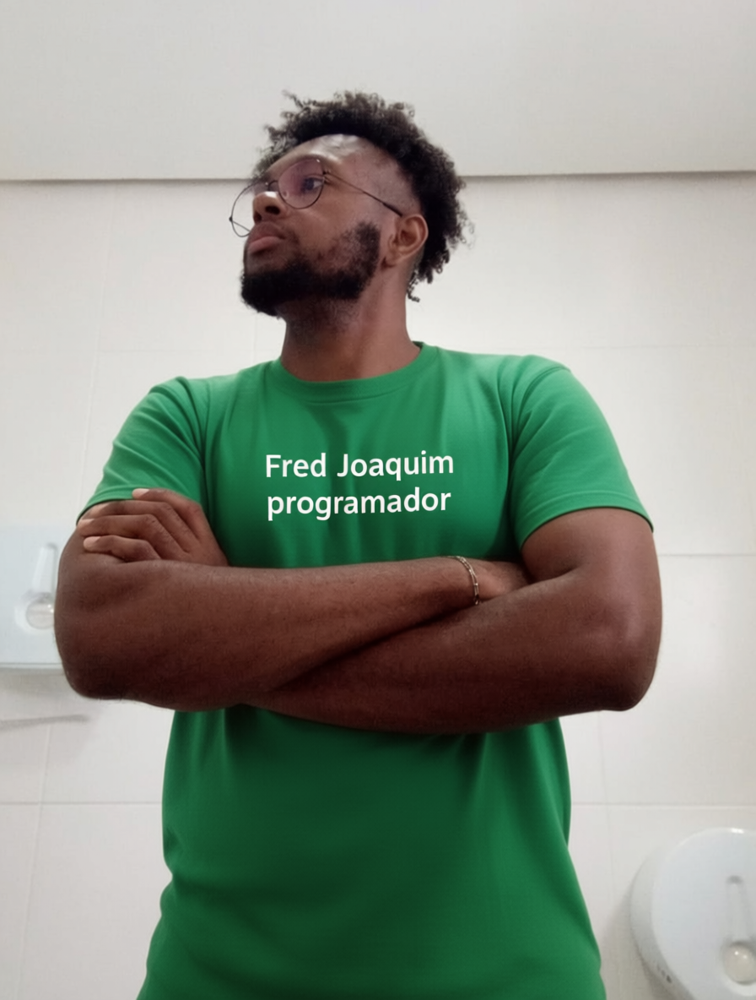

Portifólio de Fred Joaquim dos Santos
Criando soluções digitais com propósito e qualidade
Sou Fred Joaquim dos Santos, Técnico em Informática com formação complementar em marketing digital, design gráfico, Microsoft Office e inteligência artificial aplicada. Desde setembro de 202 iniciei minha jornada na programação e, desde então, desenvolvi 9 projetos práticos, incluindo portfólios, jogos interativos, ferramentas úteis e aplicações web que demonstram minha evolução no front-end. Estou disponível para oportunidades presenciais ou remotas, sempre comprometido em aprender, evoluir e entregar resultados reais.
Instagram Github LinkedIn 